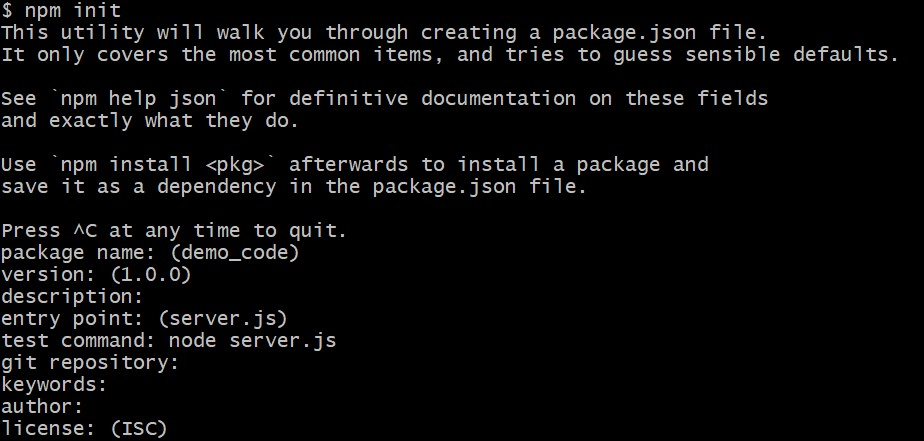
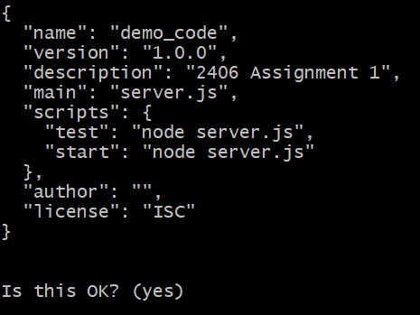
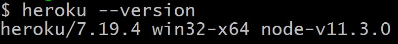

© Omar Garcia Flores & L.D. Nel 2019
Revisions:
The purpose of this tutorial is for you to be introduced to one of the most important collaboration tools in the industry, Git. The use of this tool in various workplaces is a common practice and will be useful for various other courses such as COMP3004.
As background for this tutorial it is recommended that you look over the Git documentation in the following website https://guides.github.com/introduction/git-handbook/
To learn more about version control software and Git, refer to the following website: https://git-scm.com/about
Tutorial grading: 0,1,or 2 marks. 0 marks for no show or no progress. 1 mark for partial completion, and 2 marks for completing all or most of the tutorial. Important: tutorials are meant to be started as homework. You will not generally be able to finish a tutorial if you only start it at the tutorial session.
In this tutorial you will create a Github Repository and deploy the Assignment 1 answer code on a Heroku remote image.
If you are working on a lab computer, make sure to check that Git is already installed and skip to part 2.
Head to https://git-scm.com/downloads, download and install git. Follow the installation insctructions according to your operating system.
After installing, go on your terminal and enter the following command:
$ git --versionA message similar to the following should be displayed:
After installing Git, you should have the following program in your system:
Git bash is a Unix shell command line for Windows, a very powerful tool.
Head to http://github.com and create a new account. If you already have one, skip to the next step.
To learn more about SSH keys, head to https://help.github.com/en/articles/about-ssh.
Open your terminal and enter the following command:
$ ssh-keygenPress enter on every question prompted.
This will generate a very long string, this is an SSH key.
To display the generated key, enter the following command:
$ cat ~/.ssh/id_rsa.pubDo not share your ssh key with anyone.
Head back to GitHub and click on the plus (+) sign on the top right corner and then on Settings.
Once on the Settings page, click on SSH and GPG keys, the folllowing page should be displayed:

Click on New SSH key

You should have the following options, fill them with your ssh key and give it a name of your choice.
You have succesfully added an SSH key to your account.
Click on the plus (+) sign on the top right corner and then on New repository

You should then arrive at the following page:

Then click on Create repository (Green button)
After creating the repository you should see the following screen:

At the top of the page, click on SSH, and then copy the given link.
Using your terminal, head over to the directory in which you would like to clone this repository to (i.e. Documents/ GitHub Projects, etc.)
Enter the following command:
$ git clone <paste ssh link here>Git will now clone the repository to the given directory, it should look like this:

Make the following modifications to the answer code of assignment one in the demo_code directory.
Open the server file with a text editor and make the following changes:
.listen(3000) with .listen(process.env.PORT || 80)This change must be made since we do not know the port that will be assigned to our server on heroku
Open a terminal in the current demo_code directory and enter the following command:
$ npm initYou will be prompted with a series of questions, press the Enter key until you reach the option:
When prompted to enter a Test Command , enter the following:
node server.jsContinue to press the Enter key for the rest of the questions.
The final result should look like the following:


By the end of this step you should have generated a package.json file
Copy every file and directory inside of the given demo_code directory.
Head to the directory you cloned from GitHub in step 3 and paste all the copied items.
You should now have the following items on your cloned directory:
Before moving on, we must tell git who we are by entering the following command:
$ git --global set user.email "youremail@gmail.com"Git keeps track of the changes we've made to the current working directory, this can be verified by entering the following command:
$ git statusAs you can see, Git will tell us that there are serveral files that are untracked and modified.
We must first tell Git who we are by entering the following command:
$ git config --global user.email "you@example.com"To add the modified files to the current work stream, enter the following command:
$ git add -AThis will have added the changes to the stream, now we have to stage these changes.
To stage our changes (also know as "commit") we will enter the following command:
$ git commit -m "Commit message"
This will have commited and staged the changes made to the stream.
$ git push
This will push the changes we've made to the cloud repository.
Head to https://www.heroku.com/ and click on the Sign up button.

After completing the sign up process, you should arrive at the main dashboard, once you arrive at this screen, move on to the next step.

Head to https://devcenter.heroku.com/articles/heroku-cli#download-and-install and follow the install instructions according to your operating system.
After following these steps, enter the following command to verify the installation was succesful:
$ heroku --version
In the same directory where step 5 took place, enter the following command:
$ heroku create
This will redirect you to Heroku's website to log in. Once loged in, it will generate a remote image and provide you with a link to access this server.
Note that heroku generates a random name for our project by default. However, if a string with the desired url name is provided, heroku will attempt to give us such url. For example:
$ heroku create "tutorial"This command will attempt to create a heroku image with such name, however if it is already taken, it will fail.
Enter the following command after having created the remote image:
$ git push heroku master
This will deploy our app to the heroku server. This will seem like a lot of information but it will tell you whether or not the deployment was succesful.
After having deployed the app, access the link and make sure to add /assignment1.html.
The final result should be a working app on a heroku server:
If you used the lab computer to complete the tutorial, REMOVE the ssh key you added from your GitHub account.
Attempt to create a collaborative repository with another student. Create a branch and create a pull request with your changes.
Branching and merging: https://git-scm.com/book/en/v2/Git-Branching-Basic-Branching-and-Merging
Creating a pull request: https://help.github.com/en/articles/creating-a-pull-request